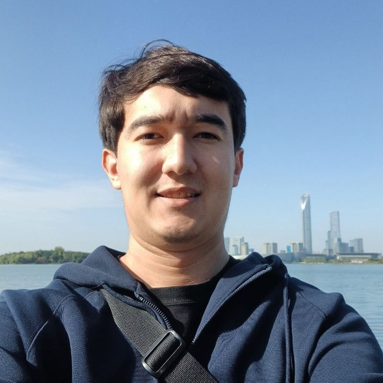
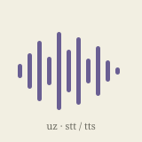

|
Mironshoh Inomjonov I'm a Research Engineer at tilmoch.ai, where I work on NLP problems. Before tilmoch.ai I worked on computer vision and speech at Vention, and on applied ML systems at KPI.com. I hold a BSc in Software Engineering from New Uzbekistan University, on a Presidential scholarship. This year I'm starting as an MSc/PhD student at Sungkyunkwan University (SKKU) in South Korea. |
 |
ResearchI'm interested in NLP, multimodal and representation learning. |

|
Filling the Gap for Uzbek: Creating Translation Resources for Southern Uzbek
Mukhammadsaid Mamasaidov, Azizullah Aral, Abror Shopulatov, Mironshoh Inomjonov WMT, EMNLP 2025 paper / arXiv / model / dataset / code Southern Uzbek has around 5 million speakers in Afghanistan, yet differs from Northern Uzbek in phonology, lexicon and orthography enough that existing systems fail on it. We built a 997-sentence evaluation set and nearly 40,000 parallel pairs from dictionaries, literature and the web, trained a translation model, and added a post-processing step for Arabic-script word boundaries. All of it is openly available. |
Projects |

|
neurograd
Mironshoh Inomjonov Python, 2025 code / micrograd
A deep learning framework inspired by Karpathy's micrograd. It implements reverse-mode automatic
differentiation over a dynamically built DAG, extending scalar micrograd-style autodiff to vectors,
and includes a minimal neural-network library with a PyTorch-like API. Install it with
|
|
 |
Uzbek Speech Models
Mironshoh Inomjonov Hugging Face, 2025 STT model / TTS model End-to-end Uzbek speech-to-text and text-to-speech pipelines, built by fine-tuning Whisper-Medium and SpeechT5 on a single NVIDIA T4. The STT model reaches 20% WER from only 10 hours of speech data — a useful result for how little supervision a low-resource language usually has. |
Experience |
tilmoch.ai |
Research Engineer Apr. 2025 – Present Tashkent, Uzbekistan Research on NLP and MT, plus large-scale data pipelines. Implemented Contrastive Preference Optimization (CPO) fine-tuning, raising COMET score over the baseline. Built an end-to-end parallel data mining pipeline that aligns sentences from literary translations via LaBSE cosine similarity, deployed on GCP. |
Vention |
ML Engineer Dec. 2024 – Apr. 2025 Tashkent, Uzbekistan Real-time computer vision for object and action detection, using YOLO, MobileNet and ViT on video streams. Designed a Laplacian-variance classifier that tells smoke apart from a fogged camera lens, for live visual quality assessment. Also built the Uzbek STT and TTS pipelines above. |
KPI.com |
ML Engineer Apr. 2023 – Dec. 2024 London (Remote) Built a RAG chatbot with caching that cut mean response time from 5 seconds to 2. Developed an image-based invoice parsing system by fine-tuning Donut and deploying it on AWS EC2, and engineered the FastAPI back-end serving every ML pipeline. |
Education |
SKKU |
MSc/PhD 2026 – Present Sungkyunkwan University — South Korea Starting this year, continuing to work on machine translation and NLP for low-resource languages. |
NewUU |
BSc, Software Engineering 2021 – 2025 New Uzbekistan University — Tashkent, Uzbekistan Recipient of the Presidential scholarship, covering full undergraduate tuition. Coursework in Artificial Intelligence, Machine Learning, Operations Research, Numerical Methods, Probability & Statistics and Linear Algebra. |